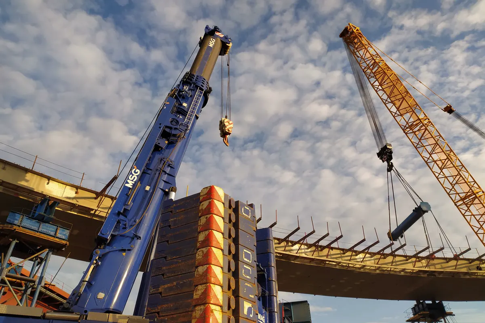
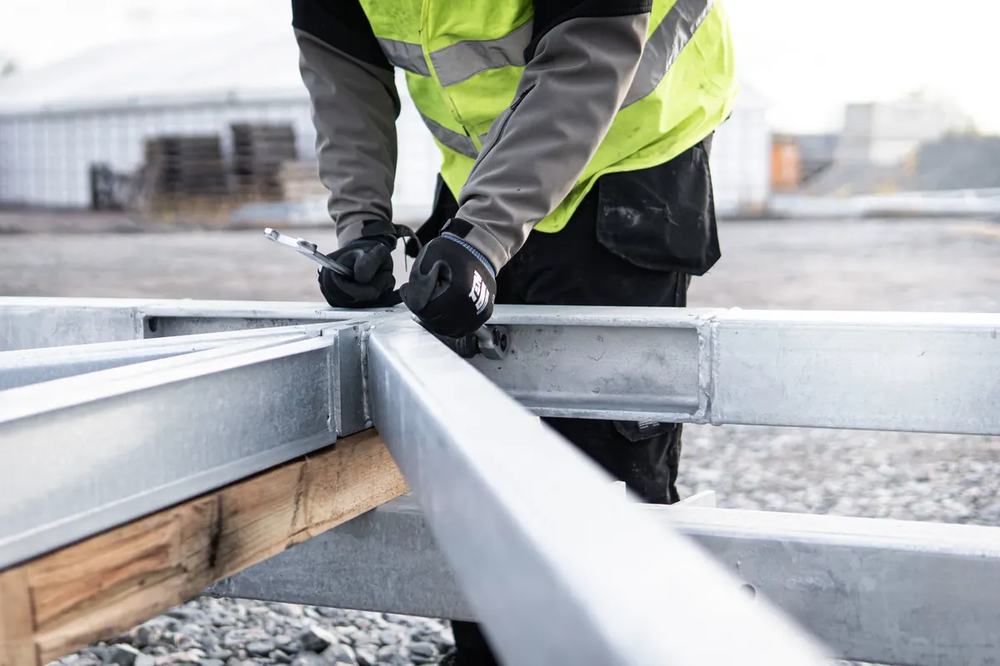
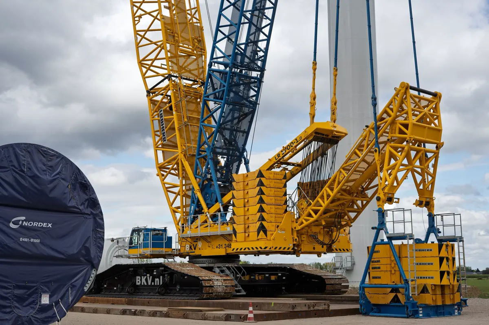
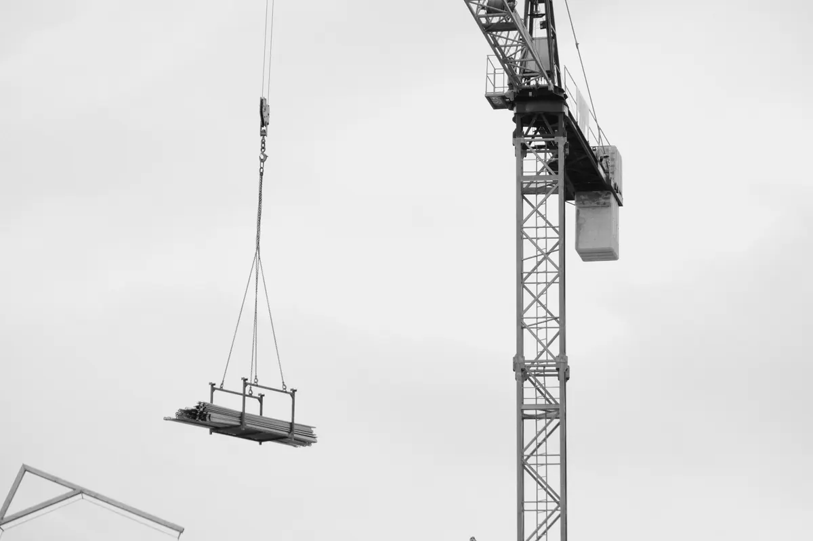
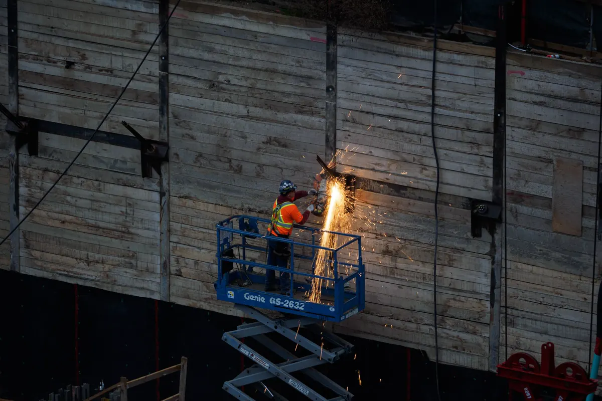

Montagem de estrutura metálica em Vitória ES: o que fazemos
A Axial Engenharia é uma empresa de montagem de estrutura metálica com sede em Vila Velha. Instalamos na obra a estrutura de galpão, mezanino, cobertura e quadra em Vitória, Vila Velha, Serra, Cariacica, Viana e no restante da Grande Vitória, com engenheiro responsável e ART em todo serviço.
A estrutura vem do fabricante que você escolher: nós especificamos no projeto o que ele precisa entregar, conferimos as peças na chegada e montamos. Quando você precisa, fazemos também o projeto estrutural e fornecemos o material. Esta página trata de estrutura de edificação; montagem de equipamento e pipe rack dentro de planta é montagem industrial, e a visão do projeto à obra pronta está em estruturas metálicas em Vitória ES.
Por que contratar a Axial para montar sua estrutura
Engenharia própria e ART
Engenheiro responsável técnico acompanha a montagem, com ART de execução registrada no CREA-ES.
Projeto, material e montagem
Projeto estrutural, fornecimento de perfis e aço e montagem — ou só a etapa de campo, se o resto você já tem.
Içamento planejado
Plano de montagem e de rigging escrito: equipamento escolhido pela tabela de carga, não pelo que estiver disponível no dia.
Solda inspecionada
Soldador qualificado com procedimento (AWS D1.1 como referência) e ensaio não destrutivo feito pela própria empresa.
Segurança de campo
Frente de trabalho em NR-18 e NR-35: análise de risco, linha de vida, PTA ou andaime e área de içamento isolada.
Pensado para a maresia
Retoque de pintura com o mesmo sistema aplicado pelo fabricante — no litoral, falha de pintura vira corrosão em pouco tempo.

Que estruturas montamos
- Galpão metálico — pilares, vigas ou treliças, terças, telhas e fechamentos. Para a obra completa, veja galpão metálico.
- Mezanino — dentro de galpão ou loja já existente, com a obra funcionando ao lado.
- Cobertura metálica — de área de carga, estacionamento, garagem e pátio.
- Quadra coberta — treliça de vão grande; veja cobertura metálica para quadra.
- Estrutura de qualquer fabricante — montamos as peças do fabricante que você contratou, com conferência de marcação, dimensão, furação e pintura na chegada.

O que está incluso na montagem e o que é opcional
| Item | Incluso | Opcional (quando você precisar) |
|---|---|---|
| Projeto | Leitura do projeto de montagem e da lista de peças | Projeto estrutural e detalhamento com ART |
| Material | Conferência das peças do fabricante na chegada | Fornecimento de perfis, vigas, tubos, chapas e aço estrutural |
| Base | Conferência de chumbadores, nível de apoio e graute | Projeto de reforço da fundação |
| Planejamento | Plano de montagem e plano de içamento | Levantamento topográfico da obra |
| Içamento | Equipe de montagem e sinalização da área | Guindaste, munck ou PTA (cotados conforme o plano) |
| Ligações | Aperto controlado dos parafusos e soldas de campo | Ensaio não destrutivo além do que o projeto pede |
| Geometria | Prumo, alinhamento e nivelamento registrados | — |
| Cobertura | Terças, correntes e tirantes | Fornecimento e instalação de telha, calha e fechamento |
| Acabamento | Retoque de pintura no sistema especificado | Pintura geral nova |
| Documentos | As-built, registros de montagem e ART | Laudo de estrutura existente |
A proposta separa cada item, para você saber o que está pagando. Se a estrutura ainda não existe, fazemos o projeto que o fabricante escolhido por você vai seguir e o fornecimento de aço estrutural; com as peças prontas, entra a montagem de estrutura pré-fabricada.

Guindaste, munck ou PTA: quando cada um
| Equipamento | Quando costuma resolver | O que limita |
|---|---|---|
| Guindaste | Treliça de vão grande, pilar alto, peça pesada ou içamento longe do equipamento | Área para patolar, terreno firme e acesso do caminhão |
| Caminhão munck | Galpão pequeno, peças leves, terças e fardos de telha, com bom acesso | Capacidade cai rápido com o raio e a altura |
| PTA (plataforma elevatória) | Acesso do montador para parafusar, soldar e fixar telha | Não é para içar peça; precisa de piso nivelado |
| Andaime | Trabalho demorado no mesmo ponto, ou onde a PTA não entra | Montagem e desmontagem levam tempo |
A escolha sai do plano de rigging: peso da peça com acessórios, raio, altura e a tabela de carga do equipamento nessas condições — não a capacidade nominal. O plano também confere o terreno sob as patolas, porque aterro recente e borda de vala tombam guindaste.

Como a montagem é feita na obra
1. Base conferida antes do içamento
- Locação e distância dos chumbadores contra o projeto;
- Nível do topo da fundação para calço ou porca de nivelamento;
- Chumbador fora de posição vai para o projetista — não se abre furo a maçarico.
2. Sequência que mantém a estrutura estável
Primeiro fecha-se um vão contraventado; os outros pórticos se apoiam nele. O guindaste só solta a peça depois de travada, e no fim do dia não fica peça solta.
3. Ligações apertadas e soldas inspecionadas
Parafuso estrutural com pré-aperto e aperto final pelo método da ABNT NBR 8800, depois do alinhamento, registrado por ligação. Solda de campo só onde o projeto prevê, com inspeção visual e, nas juntas indicadas, ensaios não destrutivos.
4. Prumo, alinhamento e graute
Prumo e cotas lidos com instrumento e registrados antes do graute. Pilar fora de prumo aparece depois como telha que não fecha e calha com caimento errado.
5. Terças, telhas e retoque de pintura
Fixação da telha no número e posição do fabricante — é ela que segura a cobertura contra o vento da ABNT NBR 6123. Por fim, retoque de pintura em riscos, parafusos e soldas: na maresia, retoque esquecido vira patologia e corrosão estrutural.

Segurança na montagem: NR-18 e NR-35
- Acesso: PTA, andaime ou cesto — escalar pilar não é método de acesso;
- Queda: cinturão paraquedista com talabarte duplo e linha de vida ao longo das vigas;
- Içamento: área isolada, sinaleiro designado, cabo-guia e ninguém sob carga suspensa;
- Vento e chuva: critério de parada definido no plano;
- Equipe: montadores e operadores com treinamento válido.
Como trabalhamos: do contato à entrega
Contato pelo WhatsApp
Você manda projeto, fotos e endereço. Recebe o retorno do escopo no mesmo dia útil.
Análise e visita
Conferimos projeto, acesso e base. Recebe a lista do que falta para montar.
Proposta
Escopo, equipamento de içamento e cronograma. Recebe a proposta item a item.
Planejamento
Sequência e içamento definidos. Recebe o plano de montagem e a ART.
Recebimento das peças
Conferência de marcação, furação e pintura. Recebe o registro de divergências, se houver.
Montagem
Içamento, ligações, prumo, telhas e retoque. Recebe os registros de prumo e aperto.
Entrega
Vistoria final com você. Recebe o as-built e a documentação da obra.
O que você recebe na entrega
| Documento | Para que serve |
|---|---|
| ART de execução | Responsabilidade técnica registrada no CREA-ES; pedida em vistoria, seguro e financiamento |
| As-built | Mostra a estrutura como foi montada, com as alterações de campo; base para ampliar o galpão |
| Registros de prumo e nivelamento | Comprovam que a geometria ficou dentro da tolerância |
| Registro de aperto das ligações | Mostra método e resultado por ligação |
| Relatório das soldas de campo | Inspeção visual e ensaios feitos nas juntas indicadas |
| Registro do retoque de pintura | Áreas tratadas e sistema aplicado |
Esse pacote é o que você vai precisar para instalar uma ponte rolante ou responder a uma vistoria. Para avaliar uma estrutura que já existe, o caminho é um laudo técnico com ART.
Tem uma estrutura para montar?
Mande o projeto e o endereço da obra pelo WhatsApp. Retornamos com o escopo no mesmo dia útil.
O que mandar para receber o orçamento
- Projeto de detalhamento e de montagem (ou o que você tiver — croqui também serve para começar);
- Tipo de estrutura, vão e altura aproximados;
- Peso total ou lista de peças, se o fabricante já entregou a estrutura;
- Fotos da base e do acesso para caminhão e guindaste;
- Tipo de telha e fechamento, se entram no escopo;
- Endereço da obra e prazo pretendido.
Sem projeto ainda? A montagem começa pelo projeto estrutural, ou pela obra em estrutura metálica com projeto e montagem.
Perguntas frequentes sobre montagem de estrutura metálica
Vocês montam estrutura de qualquer fabricante?
Sim. A estrutura vem do fabricante que você contratar, com o projeto de montagem, a lista de peças marcadas e os parafusos especificados. Antes de mobilizar a equipe conferimos as peças recebidas e a base. Divergência é resolvida com o fabricante antes do içamento, não com maçarico em cima da viga.
Quanto custa a montagem de uma estrutura metálica?
Depende do peso e da quantidade de peças, da altura, do acesso, do equipamento de içamento e do que entra no escopo, como telhas e fechamentos. Mande o projeto, fotos e o endereço pelo WhatsApp: retornamos com o escopo no mesmo dia útil e a proposta separa cada item.
Qual o prazo para montar?
O prazo sai do plano de montagem e fica no cronograma da proposta. Ele depende do tamanho da estrutura, da disponibilidade do guindaste, de a base estar pronta e conferida e do clima, já que içamento para com vento forte.
A montagem sai com ART?
Sim. A montagem é executada sob responsabilidade de engenheiro habilitado, com ART de execução registrada no CREA-ES. Na entrega vão também o as-built e os registros de prumo, aperto, soldas de campo e retoque de pintura.
Vocês atendem a minha cidade?
A sede é em Vila Velha e atendemos toda a Grande Vitória: Vitória, Vila Velha, Serra, Cariacica, Viana, Guarapari e Fundão, além de Anchieta, Aracruz e Linhares. Para outras cidades do Espírito Santo, consulte pelo WhatsApp.
Vocês fazem obra pequena, como um mezanino ou uma cobertura?
Sim. Mezanino dentro de galpão, cobertura de área de carga ou de garagem seguem o mesmo cuidado de uma obra grande: base conferida, plano de içamento, NR-35 e ART. Em obra pequena, munck ou PTA costumam bastar.
Qual a garantia da montagem?
A que a lei estabelece: pelo art. 618 do Código Civil, quem executa a obra responde por cinco anos pela solidez e segurança dela. A documentação entregue — as-built, registros e ART — é o que comprova como a estrutura foi montada.
Montagem de estrutura metálica na Grande Vitória
Instalação de galpão, mezanino, cobertura e quadra em obras da região:
Continue lendo
- Estrutura metálica para laje: vigas e steel deck
- Sobrado em estrutura metálica
- Mezanino metálico em galpão, loja e casa
- Tipos de treliça, perfis e aços estruturais
- Estruturas metálicas: do projeto à obra pronta
- Montagem de estrutura pré-fabricada
- Galpão metálico
- Cobertura metálica para quadra
- Montagem industrial de equipamentos e pipe rack
- Página inicial — todos os serviços de engenharia